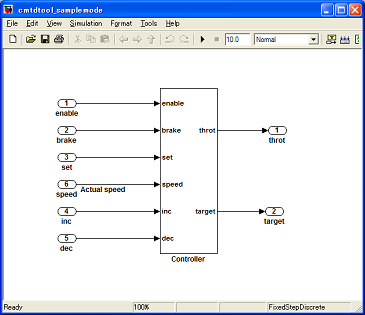
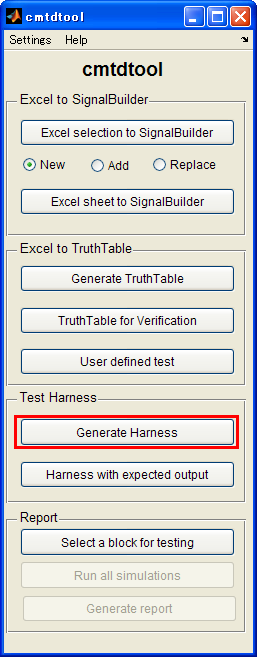
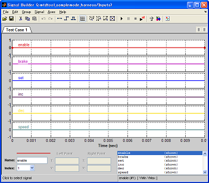

Generate test harness
- Supported MATLAB R2009b or later.
- Requires Simulink Veirification and Validation and Simulink Design Verifier for R2009b and R2010a.
- Requires Simulink Veirification and Validation for R2010b or later.
Contents
Overview
(1) Open a model to be tested (set the model as bdroot).

(2) Click Generate Harness button.

(3) A harness model will be created.

(4) A signal builder block inside the harness model has a dummy inputs.

How to run
- Open cmtdtool_samplemode.mdl in cmtdtool's install directory.
- Click "Generate harness" button in cmtdtool GUI.
- Check that a new harness model is created.
- Run the following commands and you will see that the same operation can be done by API call .
open_system('cmtdtool_samplemode') sldvmakeharness('cmtdtool_samplemode');